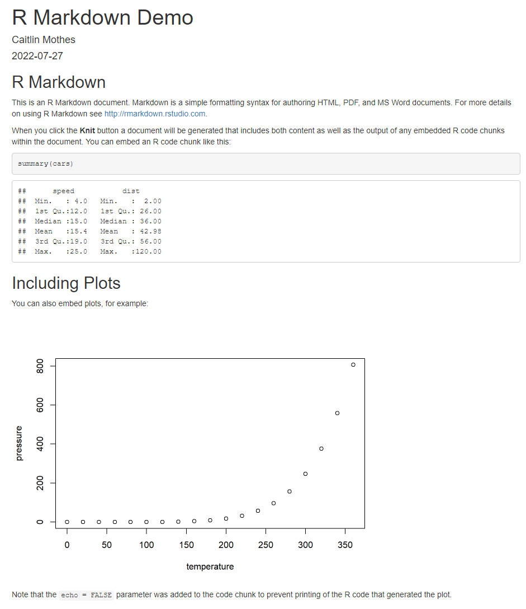
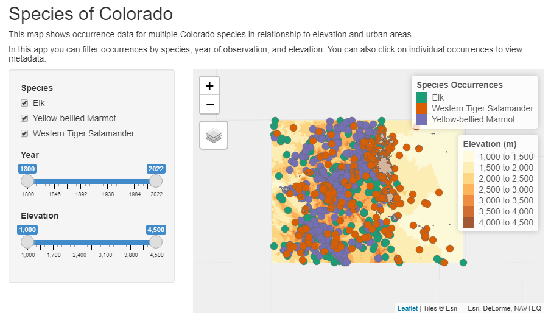

source("packageLoad.R")
packageLoad(c("tmap", "ggplot2", "shiny", "rmarkdown", "dplyr"))Day 3
Spatial Data Visualization and Sharing
We did some basic plotting yesterday to view the results of our spatial analyses. Today we will be working with some more advanced mapping techniques, plotting multiple spatial layers together, and learn how to make these interactive and ways to share data and visualizations with others.
First we need to call in the packages needed for today’s lesson. Load in our packageLoad() function that we have now saved as a script with source() and read in the following packages:
Next we need to read in data from yesterday. Since we saved these as R objects in an .RData format, we can load those objects back into the session with load().
Note: If we saved a .RData file in the main project directory, these objects would load in the environment every time you open a new session. This is related to the question you may get every time you close out of R Studio that says “Do you want to save your workspace”. It is best practice to always say no (you can set this in your global options), otherwise you will be saving your entire R environment every time which likely consists of too much extra data you don’t need. Here we are saving the objects we know we will use again and that had required quite a bit of code to create them.
load("data/objects.RData") #path to the .RData fileMapping with ggplot2
Let’s start visually exploring our counties data. R has a base plot() function which we used briefly yesterday. Since counties_attr is a spatial data frame, we have to specify the “geometry” column to plot to make it spatial.
plot(counties_attr$geometry)We used gpglot2 a little bit yesterday to make some bar and line charts, but this package also has the capability of mapping spatial data, specifically sf objects, with the geom_sf() function:
ggplot(data = counties_attr) +
geom_sf()Say we want to color counties by our total population variable:
ggplot(data = counties_attr, aes(fill = total_pop)) +
geom_sf()geom_sf() interprets the geometry of the sf object and visualizes it with the ‘fill’ value given.
Customizing ggplot2 maps
We worked through a little bit of customization with ggplot2 yesterday. Here are some ways to make a more publication ready map:
ggplot(data = counties_attr, aes(fill = total_pop)) +
geom_sf() +
scale_fill_distiller(palette = "OrRd", direction = 1) +
labs(title = "Total Population by Colorado County, 2019",
fill = "Total Population",
caption = "Data source: 2019 5-year ACS, US Census Bureau") +
theme_void()You can save maps/plots either directly from the viewer pane or with the ggsave() function, which allows for a little more customization in your figure output.
?ggsaveMapping with tmap
We’ve already been using the qtm() function with tmap to quickly view our results, but there are also a lot of ways to create custom cartographic products with this package.
Set tmap_mode() to “plot” to make static maps, in case you were still set to interactive mode from yesterday.
tmap_mode("plot")The general structure of tmap maps is to first initialize the map with tm_shape supplied with the spatial object, and then the following function depends on what geometry or symbology you want. We are going to first map just our county polygons so will use the tm_polygons() function.
tm_shape(counties_attr) +
tm_polygons()We can color polygons by a variable using the col = argument:
tm_shape(counties_attr) +
tm_polygons(col = "total_pop")A difference we see between our tmap and ggplot2 maps is that by default tmap uses a classified color scheme rather than a continuous once. By default tmap sets the classification based on the data range, here choosing intervals of 200,000.
Given this classified structure, say you also wanted to see the distribution of the raw values:
hist(counties_attr$total_pop)We can manually change the classification of our map within the tm_polygons() function with the style = argument. Let’s try using a quantile method, where each class contains the same number of counties. tm_layout() also offers a lot of options to customize the map layout. Here we remove the map frame and put the legend outside the map area.
tm_shape(counties_attr) +
tm_polygons(col = "total_pop",
style = "quantile",
n = 5,
title = "Total Population by County")+
tm_layout(frame = FALSE,
legend.outside = TRUE)Based on the quantile classification, we can see a little more heterogeneity now. We can even add our histogram of the data distribution to the plot too with legend.hist = TRUE.
tm_shape(counties_attr) +
tm_polygons(col = "total_pop",
style = "quantile",
n = 5,
title = "Total Population by County",
legend.hist = TRUE)+
tm_layout(frame = FALSE,
legend.outside = TRUE,
legend.hist.width = 5)tmap also has functions to add more customizations like a compass, scale bar and map credits.
tm_shape(counties_attr) +
tm_polygons(col = "total_pop",
style = "quantile",
n = 5,
title = "Total Population by County",
legend.hist = TRUE)+
tm_layout(frame = FALSE,
legend.outside = TRUE,
legend.hist.width = 5) +
tm_scale_bar(position = c("left", "bottom")) +
tm_compass(position = c("right", "top")) +
tm_credits("Map credit goes here", position = c("right", "bottom"))You can save your maps with the tmap_save() function
?tmap_saveWe can also view attributes as graduated symbols with tm_bubbles()
tm_shape(counties_attr) +
tm_polygons() + # add base county boundaries
tm_bubbles(size = "total_pop",
col = "red",
alpha = 0.5) +
tm_layout(legend.outside = TRUE,
legend.outside.position = "bottom")Building off of this, we can view multiple attributes at once using polygon colors and graduated symbols. Say we want to color county by total population and add graduated symbols for total species occurrences per county.
tm_shape(counties_attr) +
tm_polygons(col = "total_pop",
style = "quantile", n = 5,
title = "Total Population") +
tm_bubbles(size = "species_count",
col = "navy",
alpha = 0.5,
title.size = "Species Occurrences") +
tm_layout(frame = FALSE,
legend.outside = TRUE,
legend.outside.position = "right")You can also add layers from multiple sf objects by calling a new tm_shape:
tm_shape(counties_attr) +
tm_polygons(col = "total_pop",
style = "quantile",
palette = "Greys",
n = 5,
title = "Total Population") +
tm_shape(occ) +
tm_symbols(col = "Species",
palette = "Dark2",
alpha = 0.8,
size = 0.5) +
tm_layout(frame = FALSE,
legend.outside = TRUE,
legend.outside.position = "right")tmap tips
Can’t decide on a color palette? tmap has a built in tool that allows you decide.
tmaptools::palette_explorer()Want a cool tmap tip?
tmap_tip()Faceting
Want to compare across multiple variables? We can quickly do that with tm_facets() or by supplying a string of column names within tm_polygons, depending on the format of your data.
Lets first compare across our census variables, which are organized as different columns in counties_attr
tm_shape(counties_attr) +
tm_polygons(c("total_pop", "med_income"),
style = "quantile", n = 5,
title = c("Total Population", "Median Income"))+
tm_facets(ncol = 2) +
tm_layout(frame = FALSE)Second, we can compare across values in one column by adding the by = argument to tm_facets(). Here let’s make an individual map for each species.
tm_shape(counties_attr) +
tm_polygons() +
tm_shape(occ) +
tm_facets(by = "Species") +
tm_symbols(col = "Species", palette = c("red", "yellow", "blue"),
alpha = 0.5) +
tm_layout(legend.show = FALSE)We can also make these facet maps interactive, and sync the zoom and scrolling across all facets with sync = TRUE
tmap_mode("view")tm_shape(counties_attr) +
tm_polygons() +
tm_shape(occ) +
tm_facets(by = "Species", sync = TRUE) +
tm_dots(col = "Species", palette = c("red", "yellow", "blue"),
alpha = 0.5, size = 0.1, legend.show = FALSE)Animation
Annimations are a powerful (and fun!) visualization method when you have time series data. Our species occurrence data has year associated with it, so we could make an animation of observations over time.
Let’s go back to static plot mode:
tmap_mode("plot")Since we have a lot of species data, for this example let’s look at just the Elk occurrences. Here we are using dplyr’s filter() function to filter rows that are just Elk observations and remove any that do not have year data.
elk_occ <- occ %>%
dplyr::filter(Species == "Elk", !is.na(year))We can make an animation with tmap_animation(). To do so we need to create a tmap object first, and must set the nrow and ncol to 1 within tm_facets(). We also set free.coords = FALSE which will keep the zoom level of the map constant across animation frames. We then supply this object and other animation settings to tmap_animation().
m1 <- tm_shape(counties_attr) +
tm_polygons() +
tm_shape(elk_occ) +
tm_symbols(col = "red", alpha = 0.8) +
tm_facets(along = "year", free.coords = FALSE, nrow = 1, ncol = 1)tmap_animation(m1, width = 1200, height = 600, delay = 80)Interactive Mapping
Let’s go back to interactive mode and walk through how to further use and customize interactive maps.
tmap_mode("view")To learn the ins and outs of interactive mapping, we are going to make a map with three layers: our elevation raster, urban areas polygons, and species occurrences.
We already have our occurrence data set loaded, lets read in our elevation and urban areas files. For efficiency, we can use the %>% operator to process our elevation raster in a single step, which includes projecting it to the CRS of our occurrence data and cropping it to the occurrence extent (the raw file extended a little outside of the Colorado boundary).
urban <- st_read("data/urban_areas.shp")
elevation <- terra::rast("data/elevation_1km.tif") %>%
terra::project(vect(occ)) %>%
terra::crop(vect(occ))Now lets add all of them to our interactive map. Note that alpha controls the transparency/opacity of layers, with a range of 0 (totally transparent) to 1 (non-transparent).
tm_shape(occ) +
tm_dots(col = "Species",
size = 0.1,
palette = "Dark2",
title = "Species Occurrences") +
tm_shape(urban) +
tm_polygons(alpha = 0.7, title = "Urban Areas") +
tm_shape(elevation) +
tm_raster(alpha = 0.8, title = "Elevation (m)")To improve the user experience, we can customize what content displays in the pop-up windows. Let’s add some information associated with each species’ occurrence.
tm_shape(occ) +
tm_dots(
col = "Species",
size = 0.1,
palette = "Dark2",
title = "Species Occurrences",
popup.vars = c("Record Type" = "basisOfRecord",
"Year" = "year",
"Month" = "month",
"Elevation (m)" = "elevation")
) +
tm_shape(urban) +
tm_polygons(alpha = 0.7, title = "Urban Areas") +
tm_shape(elevation) +
tm_raster(alpha = 0.8, title = "Elevation (m)")More visualization packages to explore
So far we have used ggplot2 and tmap extensively. It is important to note there are many other spatial data visualization packages, but we wanted to reduce the amount of package installation required for this workshop. tmap is unique because of its breadth of functionality, like static and interactive mapping, animations, etc. Others worth investigating are mapview , leaflet and plotly for interactive visualizations.
Data Sharing
R Markdown
R markdown is a fantastic notebook-style interface that combines text and code to produce reproducible analyses and workflows and generate high quality reports that can be shared with an audience. You should have installed the rmarkdown package in the set-up stage of this workshop. We are going to run through a quick example of how to use R Markdown. Start by going to File -> New File -> R Markdown.
Put in your details like title and author, then investigate the draft document it creates for you. If you hit the knit button at the top of your document, it should ask where you want to save the file, and then it renders a HTML document like this:

You can then share these documents with your intended audience, or host them on the web with (free) publishing services such as RPubs.
Shiny
Shiny is an R package that takes interactivity to another level through interactive web applications, allowing users to interact with any aspect of your data and analysis. You can host them as standalone web apps or embed them within R Markdown documents or build dashboards. And the best part is…you can do it all within R, no web development skills required!
So, lets build a quick shiny app! Rolling with the multilayer interactive map we just made above, let’s make an app that allows users to interact with the data. For example, we have a lot of species occurrence data. Based on various attributes, we could allow users to choose what they want to see on the map, such as which species, what year they were observed, and what elevation they were found at.
Shiny apps are contained in a single script called app.R . app.R has three components:
a user interface (ui) object, which controls the layout and appearance of your app
a server function, which contains the instructions needed to build your app
a call to
shinyApp()which creates your web application based on your ui/server objects.
Let’s create a new shiny app by going to File -> New File -> Shiny Web App
This creates an outline of our shiny app, with the ui and server objects and a call to shinyApp() at the end. Since shiny apps are self contained within the app.R file, at the top of the file define which libraries you need and read in your data. app.R files assume the working directory is the directory the app.R file lives in, so for this example save it to the root project directory.
First let’s define the UI. Our layout is going to be a fluid page with a title panel, followed by a sidebar layout with a main panel (our map) and a side panel (user inputs).
ui <- fluidPage(
#App title
titlePanel("Species of Colorado"),
# Add some informational text
h5(
"This map shows occurrence data for multiple Colorado species in relationship to elevation and urban areas."
),
h5("In this app you can filter occurrences by species, year of observation, and elevation. You can also click on individual occurrences to view metadata."),
# Sidebar layout
sidebarLayout(
# Sidebar panel for widgets that users can interact with
sidebarPanel(
# Input: select species shown on map
checkboxGroupInput(
inputId = "species",
label = "Species",
choices = list(
"Elk", "Yellow-bellied Marmot", "Western Tiger Salamander"
),
selected = c("Elk", "Yellow-bellied Marmot", "Western Tiger Salamander")
),
# Input: Filter points by year observed
sliderInput(inputId = "year", label = "Year",
min = 1800, max = 2022, value = c(1800,2022), sep=""),
# Input: Filter by elevation
sliderInput(inputId = "elevation",
label = "Elevation",
min = 1000, max = 4500, value = c(1000,4500))
),
# Main panel for displaying output (our map)
mainPanel(
# Output: interactive map
tmapOutput("map")
)
)
)Now define the server logic that draws the map based on user inputs
server <- function(input, output){
# Make a reactive object, meaning an object that will change based on user input
occ_react <- reactive(
occ %>%
filter(Species %in% input$species) %>%
filter(year >= input$year[1] & year <= input$year[2]) %>%
filter(elevation >= input$elevation[1] &
elevation <= input$elevation[2])
)
# Render the map based on our reactive occurrence dataset
output$map <- renderTmap({
tmap_mode("view")
tm_shape(occ_react()) +
tm_dots(
col = "Species",
size = 0.1,
palette = "Dark2",
title = "Species Occurrences",
popup.vars = c(
"Record Type" = "basisOfRecord",
"Year" = "year",
"Month" = "month",
"Elevation (m)" = "elevation"
)
) +
tm_shape(urban) +
tm_polygons(alpha = 0.7, title = "Urban Areas") +
tm_shape(elevation)+
tm_raster(alpha = 0.8, title = "Elevation (m)")
})
}Run the app
shinyApp(ui = ui, server = server)
To learn more about shiny , there are a lot of great beginner lessons here. You can publicly host your shiny apps for free with services like shinyapps.io.